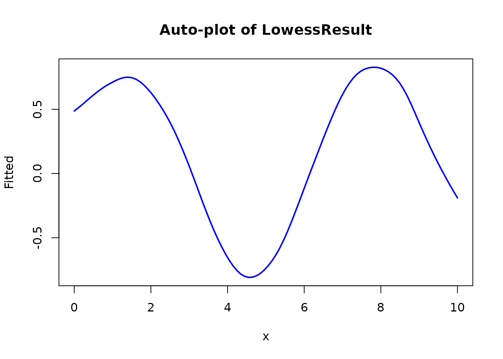
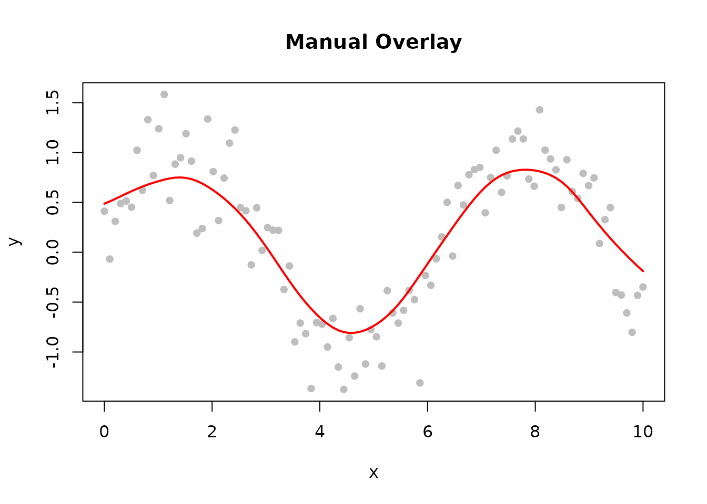
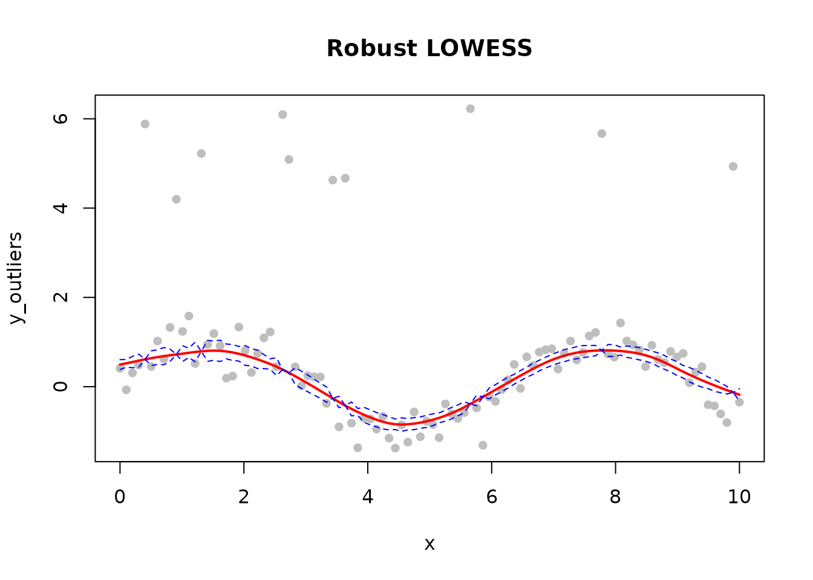
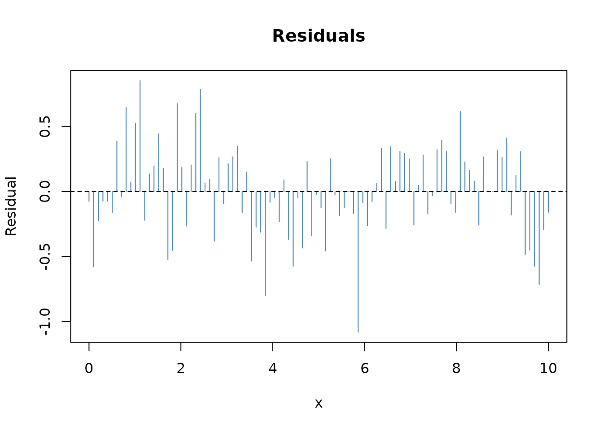
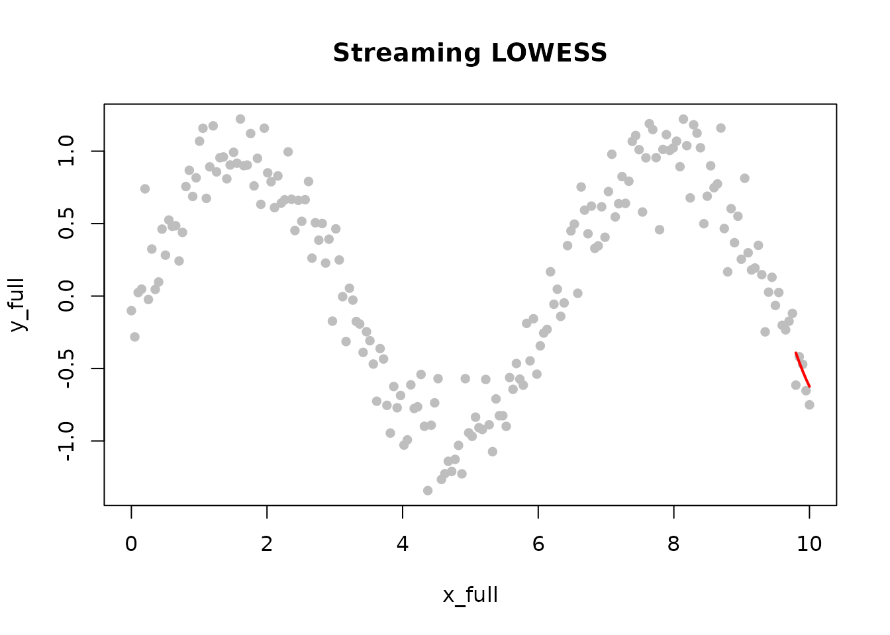
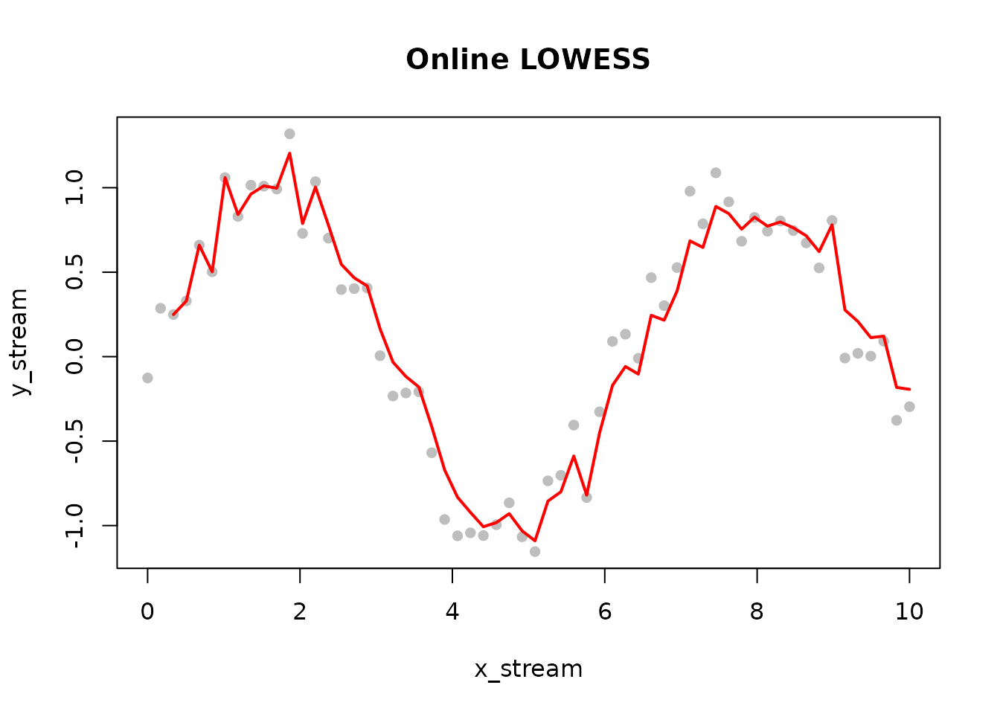

Introduction to rfastlowess
Amir Valizadeh
2026-08-23
Source:vignettes/rfastlowess-intro.Rmd
rfastlowess-intro.RmdOverview
rfastlowess is a high-performance R package for LOWESS
(Locally Weighted Scatterplot Smoothing) built on a Rust backend.
LOWESS fits a smooth curve through a scatter plot by performing a
sequence of local polynomial regressions. For each point
,
the algorithm selects the nearest fraction of observations,
assigns distance-based weights (points farther away receive lower
weight), fits a weighted least-squares polynomial, and reads off the
predicted value at
.
Because no global model is assumed, LOWESS adapts naturally to
non-linear and non-stationary data.
Optional robustness iterations guard against outliers: after each
pass, residuals are used to recompute per-observation weights so that
high-leverage outliers are progressively downweighted. This makes
iterations > 0 the right choice whenever the data may
contain measurement errors or anomalies.
Full documentation: https://lowess.readthedocs.io/
Installation
# From R-universe (pre-built binaries, no Rust required)
install.packages("rfastlowess", repos = "https://thisisamirv.r-universe.dev")Quick Start
Basic Smoothing
Lowess() accepts all smoothing options at construction
time and returns a reusable model object. Calling
fit(model, x, y) runs the algorithm and returns a
LowessResult list. Key result fields are $x
(input x values), $y (smoothed fitted values),
$fraction_used, and $iterations_used. The
fraction parameter controls the bandwidth: a larger value
produces a smoother curve at the cost of following local features less
closely.
library(rfastlowess)
# Generate example data
set.seed(42)
x <- seq(0, 10, length.out = 100)
y <- sin(x) + rnorm(100, sd = 0.3)
# Initialize model
model <- Lowess(fraction = 0.3)
print(model)
#> <Lowess Model>
#> Fraction: 0.3
#> Iterations: 3
#> Weight Function: tricube
#> Parallel: TRUE
# Fit model
result <- fit(model, x, y)
print(result)
#> <LowessResult>
#> Points: 100
#> Fraction Used: 0.3
# Quick visualization using the S3 plot method
plot(result, main = "Auto-plot of LowessResult")
# For custom plotting, access components directly
plot(x, y, pch = 16, col = "gray", main = "Manual Overlay")
lines(result$x, result$y, col = "red", lwd = 2)
Robust Smoothing with Intervals
Real-world data often contains a small fraction of gross errors.
Setting iterations > 0 activates robustness
re-weighting: after the initial fit, large residuals identify likely
outliers and their contribution is downweighted for the next iteration.
The bisquare robustness function (the default) reduces the weight of any
point whose residual exceeds about six times the median absolute
deviation to zero.
Setting confidence_intervals = 0.95 attaches pointwise
95% confidence bands to the smoothed curve. These reflect uncertainty in
the mean response, not individual observations;
prediction_intervals provides the wider bands covering
future observations.
# Add outliers
y_outliers <- y
y_outliers[sample(1:100, 10)] <- y_outliers[sample(1:100, 10)] + 5
# Robust smoothing with confidence intervals
result_robust <- fit(Lowess(
fraction = 0.3,
iterations = 5,
confidence_intervals = 0.95
), x, y_outliers)
# Plot
plot(x, y_outliers, pch = 16, col = "gray", main = "Robust LOWESS")
lines(result_robust$x, result_robust$y, col = "red", lwd = 2)
lines(result_robust$x, result_robust$confidence_lower, col = "blue", lty = 2)
lines(result_robust$x, result_robust$confidence_upper, col = "blue", lty = 2)
Diagnostics
When return_diagnostics = TRUE, the result includes
goodness-of-fit metrics that are useful for comparing different
fraction values or kernel choices.
return_residuals = TRUE attaches the raw residuals, and
return_robustness_weights = TRUE exposes the final
per-point robustness weights so you can see which observations were
downweighted.
result_diag <- fit(Lowess(
fraction = 0.3,
iterations = 3,
return_diagnostics = TRUE,
return_residuals = TRUE,
return_robustness_weights = TRUE
), x, y)
cat("R-squared: ", result_diag$r_squared, "\n")
#> R-squared:
cat("RMSE: ", result_diag$rmse, "\n")
#> RMSE:
cat("MAE: ", result_diag$mae, "\n")
#> MAE:
# Residual plot
plot(x, result_diag$residuals,
type = "h", col = "steelblue",
main = "Residuals", ylab = "Residual"
)
abline(h = 0, lty = 2)
Streaming Processing
StreamingLowess processes data in fixed-size chunks and
keeps only a small in-memory buffer, making it practical for datasets
that would otherwise require loading everything into RAM at once. The
chunk_size parameter controls how many observations are
processed at a time; chunks are stitched together using a configurable
overlap and merge_strategy to avoid boundary artefacts.
After processing all chunks, call finalize() to retrieve
the combined LowessResult covering the full input
range.
x_full <- seq(0, 10, length.out = 200)
y_full <- sin(x_full) + rnorm(200, sd = 0.2)
model_s <- StreamingLowess(fraction = 0.3, chunk_size = 50L)
# Feed data in chunks of 50
chunk_breaks <- c(0, 50, 100, 150, 200)
for (i in seq_len(length(chunk_breaks) - 1)) {
idx <- (chunk_breaks[i] + 1):chunk_breaks[i + 1]
process_chunk(model_s, x_full[idx], y_full[idx])
}
result_s <- finalize(model_s)
plot(x_full, y_full, pch = 16, col = "gray", main = "Streaming LOWESS")
lines(result_s$x, result_s$y, col = "red", lwd = 2)
Online Processing
OnlineLowess is designed for real-time data streams
where observations arrive one at a time. The model maintains a sliding
window of the most recent window_capacity points.
add_point(model, x, y) adds a single observation and
immediately returns the smoothed value at that point - or
NULL if fewer than min_points have been seen
yet.
The update_mode parameter controls how the window is
updated: "full" (default) re-smooths all window points
after each addition, giving the most accurate estimate;
"incremental" updates only the newest point, which is
faster but less accurate.
model_o <- OnlineLowess(
fraction = 0.5,
window_capacity = 30L,
min_points = 3L
)
x_stream <- seq(0, 10, length.out = 60)
y_stream <- sin(x_stream) + rnorm(60, sd = 0.2)
smoothed_values <- numeric(length(x_stream))
for (i in seq_along(x_stream)) {
out <- add_point(model_o, x_stream[i], y_stream[i])
smoothed_values[i] <- if (is.null(out)) NA_real_ else out$y
}
plot(x_stream, y_stream, pch = 16, col = "gray", main = "Online LOWESS")
lines(x_stream[!is.na(smoothed_values)],
smoothed_values[!is.na(smoothed_values)],
col = "red", lwd = 2
)
Main Classes
| Class | Use Case |
|---|---|
Lowess |
Primary interface - batch processing |
StreamingLowess |
Large datasets processed chunk by chunk |
OnlineLowess |
Real-time streams, one observation at a time |
Learn More
For comprehensive documentation including:
- Parameter selection guides
- Streaming and online processing tutorials
- Genomic data examples
- Performance benchmarks
Session Info
sessionInfo()
#> R version 4.6.1 (2026-06-24)
#> Platform: x86_64-pc-linux-gnu
#> Running under: Ubuntu 24.04.4 LTS
#>
#> Matrix products: default
#> BLAS: /usr/lib/x86_64-linux-gnu/openblas-pthread/libblas.so.3
#> LAPACK: /usr/lib/x86_64-linux-gnu/openblas-pthread/libopenblasp-r0.3.26.so; LAPACK version 3.12.0
#>
#> locale:
#> [1] LC_CTYPE=C.UTF-8 LC_NUMERIC=C LC_TIME=C.UTF-8
#> [4] LC_COLLATE=C.UTF-8 LC_MONETARY=C.UTF-8 LC_MESSAGES=C.UTF-8
#> [7] LC_PAPER=C.UTF-8 LC_NAME=C LC_ADDRESS=C
#> [10] LC_TELEPHONE=C LC_MEASUREMENT=C.UTF-8 LC_IDENTIFICATION=C
#>
#> time zone: UTC
#> tzcode source: system (glibc)
#>
#> attached base packages:
#> [1] stats graphics grDevices utils datasets methods base
#>
#> other attached packages:
#> [1] rfastlowess_3.0.0 BiocStyle_2.40.0
#>
#> loaded via a namespace (and not attached):
#> [1] cli_3.6.6 knitr_1.51 rlang_1.3.0
#> [4] xfun_0.60 otel_0.2.0 generics_0.1.4
#> [7] textshaping_1.0.5 jsonlite_2.0.0 htmltools_0.5.9
#> [10] ragg_1.5.2 sass_0.4.10 rmarkdown_2.31
#> [13] evaluate_1.0.5 jquerylib_0.1.4 fastmap_1.2.0
#> [16] yaml_2.3.12 lifecycle_1.0.5 bookdown_0.47
#> [19] BiocManager_1.30.27 compiler_4.6.1 fs_2.1.0
#> [22] htmlwidgets_1.6.4 systemfonts_1.3.2 digest_0.6.39
#> [25] R6_2.6.1 bslib_0.12.0 tools_4.6.1
#> [28] BiocGenerics_0.58.1 pkgdown_2.2.1 cachem_1.1.0
#> [31] desc_1.4.3